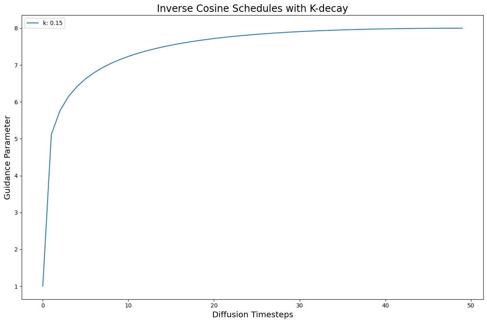
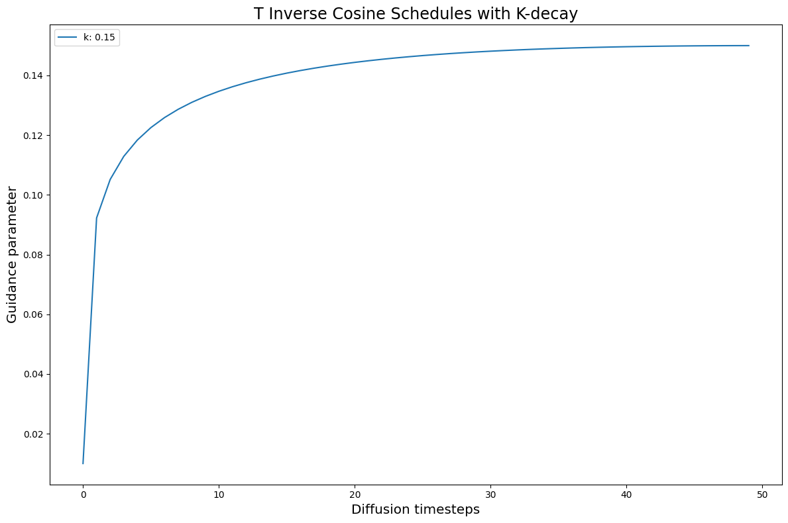
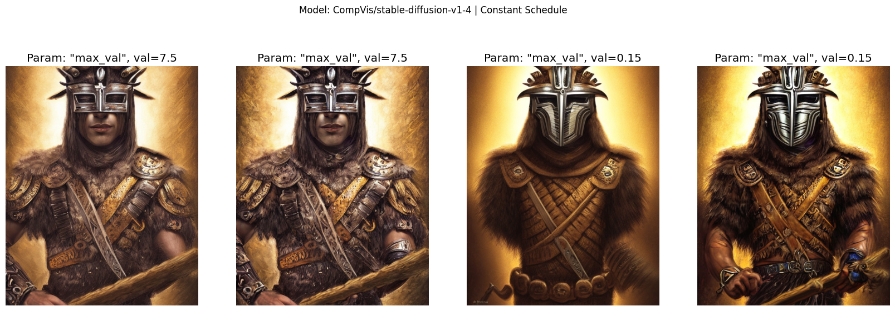
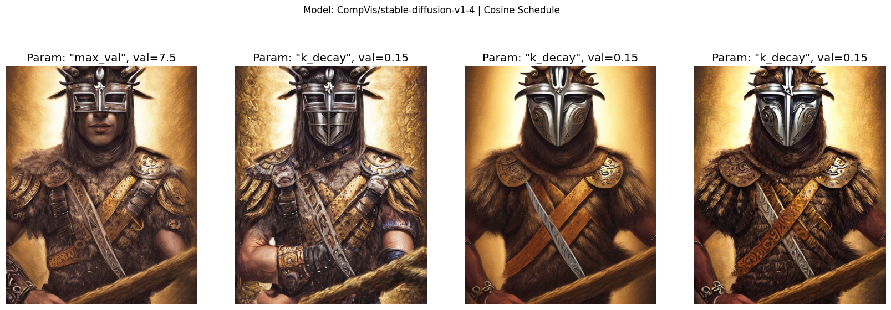
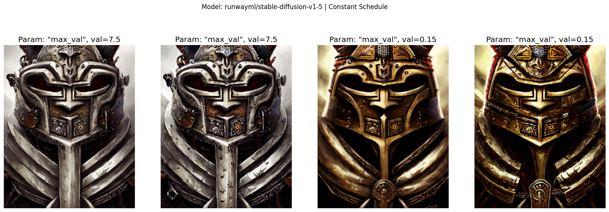
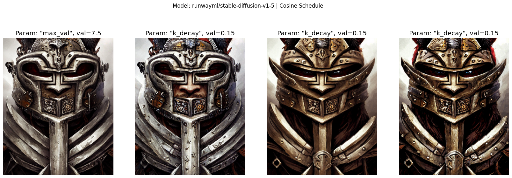
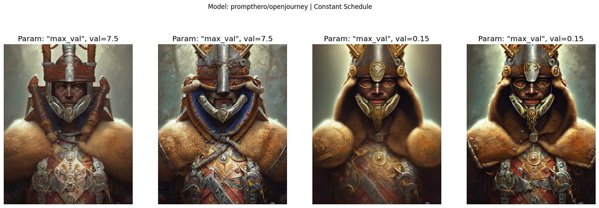
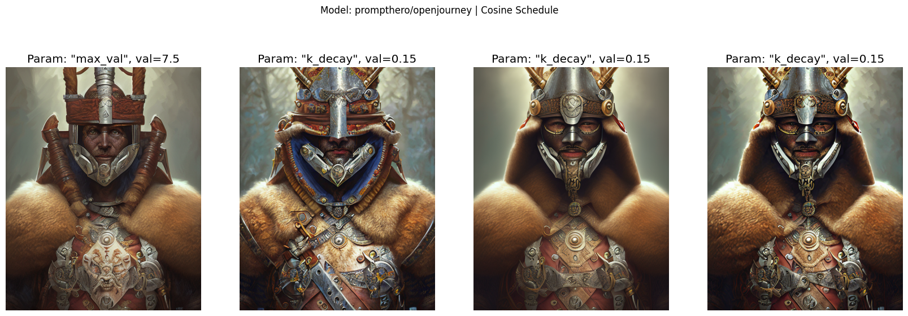
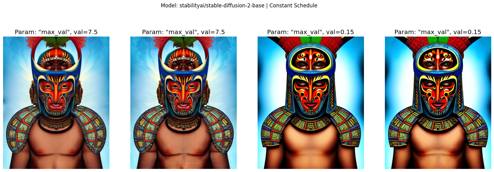
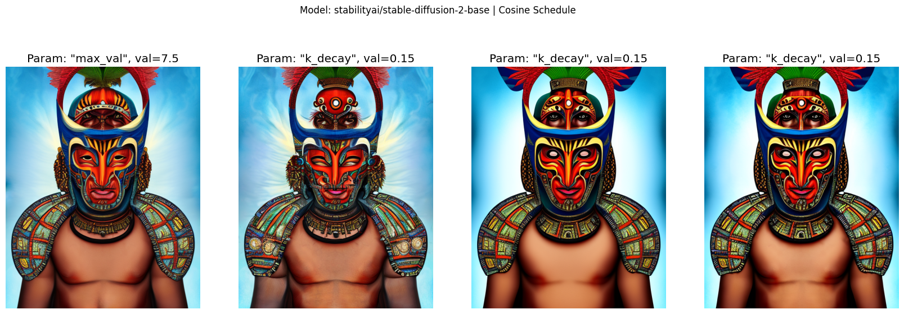

import os
import random
from typing import Callable, List, Dict
from functools import partial
import torch
import numpy as np
import matplotlib.pyplot as plt
import matplotlib.colors as mcolorsClassifier-free Guidance with Cosine Schedules Pt. 7
diffusion
classifier-free guidance
deep learning
Improving generated Diffusion images using dynamic Classifier-free Guidance.
Introduction
This notebook is Part 7 in a series on dynamic Classifier-free Guidance. We check if the scheduled and normalized Guidance improve the images generated by different kinds of Stable Diffusion models.
Recap of Parts 1-6
In the first six parts, we found a good, initial set of schedules and normalizations for dynamic Classifier-free Guidance. The best performing schedules are used in this notebook.
Part 7: Improvement across models
Part 7 takes our best schedules and runs them with the following Diffusion models:
- Stable Diffusion v1-4
- Stable Diffusion v1-5
- Prompt Hero’s openjourney
- Stable Diffusion 2-base
Python imports
We start with a few python imports.
2022-11-26 21:21:39.015654: I tensorflow/core/platform/cpu_feature_guard.cc:193] This TensorFlow binary is optimized with oneAPI Deep Neural Network Library (oneDNN) to use the following CPU instructions in performance-critical operations: AVX2 FMA
To enable them in other operations, rebuild TensorFlow with the appropriate compiler flags.
2022-11-26 21:21:39.739713: W tensorflow/compiler/xla/stream_executor/platform/default/dso_loader.cc:64] Could not load dynamic library 'libnvinfer.so.7'; dlerror: libnvinfer.so.7: cannot open shared object file: No such file or directory
2022-11-26 21:21:39.739778: W tensorflow/compiler/xla/stream_executor/platform/default/dso_loader.cc:64] Could not load dynamic library 'libnvinfer_plugin.so.7'; dlerror: libnvinfer_plugin.so.7: cannot open shared object file: No such file or directory
2022-11-26 21:21:39.739784: W tensorflow/compiler/tf2tensorrt/utils/py_utils.cc:38] TF-TRT Warning: Cannot dlopen some TensorRT libraries. If you would like to use Nvidia GPU with TensorRT, please make sure the missing libraries mentioned above are installed properly.Seed for reproducibility
seed_everything makes sure that the results are reproducible across notebooks.
# set the seed for rng
SEED = 977145576
def seed_everything(seed: int) -> torch.Generator:
random.seed(seed)
os.environ['PYTHONHASHSEED'] = str(seed)
np.random.seed(seed)
generator = torch.manual_seed(seed)
torch.backends.cudnn.deterministic = True
torch.backends.cudnn.benchmark = False
return generator
# for sampling the initial, noisy latents
generator = seed_everything(SEED)Text prompt for image generations
We use the following input text prompt, randomly chosen from the Prompt Hero site.
# text prompt for image generations
prompt = "digital painting of masked incan warrior, by filipe pagliuso and justin gerard, symmetric, fantasy, highly detailed, realistic, intricate, portrait, sharp focus, tarot card, face, handsome, peruvian, ax"Image parameters
Images will be generated over \(50\) diffusion steps. The height and width will depend on the Stable Diffusion model
# the number of diffusion steps
num_steps = 50
# dimensions for v1 and v2 Stable Diffusions
v1_sd_dims = {'height': 640, 'width': 512}
v2_sd_dims = {'height': 768, 'width': 768}Creating the best schedules so far
We create Guidance schedules using the cf_guidance library. This library also has the Guidance normalizations.
# helpers to create cosine schedules
from cf_guidance.schedules import get_cos_sched
# normalizations for classifier-free guidance
from cf_guidance.transforms import GuidanceTfm, BaseNormGuidance, TNormGuidance, FullNormGuidanceFor the other schedule parameters, we keep most of the same values from the rest of the series.
# Default schedule parameters from the blog post
######################################
max_val = 8 # guidance scaling value
min_val = 1 # minimum guidance scaling
num_steps = 50 # number of diffusion steps
num_warmup_steps = 0 # number of warmup steps
warmup_init_val = 0 # the intial warmup value
num_cycles = 0.5 # number of cosine cycles
k_decay = 1 # k-decay for cosine curve scaling
# smaller values for T-Norm and FullNorm
max_T = 0.15
min_T = 0.01
######################################
# for constant Guidance, and Base Norm guidance
DEFAULT_COS_PARAMS = {
'max_val': max_val,
'num_steps': num_steps,
'min_val': min_val,
'num_cycles': num_cycles,
'k_decay': k_decay,
'num_warmup_steps': num_warmup_steps,
'warmup_init_val': warmup_init_val,
}
# for T-Norm and Full Norm guidance
DEFAULT_T_PARAMS = {
'max_val': max_T,
'num_steps': num_steps,
'min_val': min_T,
'num_cycles': num_cycles,
'k_decay': k_decay,
'num_warmup_steps': num_warmup_steps,
'warmup_init_val': warmup_init_val,
}The functions below give us a way to quickly create different schedules. They are also brought in from the previous notebooks.
def cos_harness(default_params: dict, new_params: dict) -> dict:
'''Creates cosine schedules with updated parameters in `new_params`
'''
# start from the given baseline `default_params`
cos_params = dict(default_params)
# update the with the new, given parameters
cos_params.update(new_params)
# return the new cosine schedule
sched = get_cos_sched(**cos_params)
return sched
def create_expts(params: dict, schedule_func: Callable) -> List[Dict]:
'''Creates a list of experiments.
Each element is a dictionary with the name, value, and schedule for a given parameter.
A `title` field is also added for easy plotting.
'''
names = sorted(params)
expts = []
# step through parameter names and their values
for i,name in enumerate(names):
for j,val in enumerate(params[name]):
# create the experiment
expt = {'param_name': name,
'val': val,
'schedule': schedule_func(new_params={name: val})}
# name for plotting
expt['title'] = f'Param: "{name}", val={val}'
# add it to the experiment list
expts.append(expt)
return exptsStatic baselines
First we create the constant, baseline Guidances.
For Prediction Normalization we use the same default \(G = 7.5\). For T-Normalization and Full Normalization, we use a static \(G_\text{small} = 0.15\).
# create the baseline schedule with the new function
baseline_g = 7.5
baseline_params = {'max_val': [baseline_g]}
baseline_func = lambda *args, **kwargs: [baseline_g for _ in range(num_steps)]
baseline_expts = create_expts(baseline_params, baseline_func)
T_baseline_g = 0.15
T_baseline_params = {'max_val': [T_baseline_g]}
T_baseline_func = lambda *args, **kwargs: [T_baseline_g for _ in range(num_steps)]
T_baseline_expts = create_expts(T_baseline_params, T_baseline_func)Improving the baseline with schedules and normalizations
Now we build the most promising schedule so far: Inverse kDecay with a fast warmup.
# start by creating regualr kDecay cosine schedules
inv_k_params = {'k_decay': [0.15]}
inv_k_func = partial(cos_harness, default_params=DEFAULT_COS_PARAMS)
inv_k_expts = create_expts(inv_k_params, inv_k_func)
# invert the schedules to turn them into a type of warmup
for s in inv_k_expts:
s['schedule'] = [max_val - g + min_val for g in s['schedule']]
# put all schedules together
all_k_expts = inv_k_expts
We also build a matching schedule with smaller \(G\) values for the T and Full Normalizations.
# create the kDecay cosine experiments
T_inv_k_func = partial(cos_harness, default_params=DEFAULT_T_PARAMS)
T_inv_k_expts = create_expts(inv_k_params, T_inv_k_func)
# inverse the schedules
for s in T_inv_k_expts:
s['schedule'] = [max_T - g + min_T for g in s['schedule']]
all_T_k_expts = T_inv_k_expts
Loading different Stable Diffusion models
# to load Stable Diffusion pipelines
from min_diffusion.core import MinimalDiffusion
# to plot generated images
from min_diffusion.utils import show_image, image_grid, plot_gridGathering Stable Diffusion models
Here we group the different Stable Diffusion models that will be loaded and tested.
# group the different models to run
diffusion_runs = [
# Stable Diffusion v1-4
{'model_name': 'CompVis/stable-diffusion-v1-4',
'model_kwargs': {'better_vae': 'ema'}},
# Stable Diffusion v1-5
{'model_name': 'runwayml/stable-diffusion-v1-5',
'model_kwargs': {'better_vae': 'ema'}},
# prompthero/openjourney
{'model_name': "prompthero/openjourney",
'model_kwargs': {'better_vae': 'ema'}},
# Stable Diffusion 2-base
{'model_name': 'stabilityai/stable-diffusion-2-base',
'model_kwargs': {'unet_attn_slice': False}},
## TODO: test on SD-v2 proper
# # SD 2
# {'model_name': 'stabilityai/stable-diffusion-2',
# 'model_kwargs': {'unet_attn_slice': False}},
]Function to run the experiments
In previous notebooks we ran one Diffusion model at a time. Now, we need to bring the model loading into the pipeline so that we can easily try different models.
def load_sd_model(model_name, device, dtype, model_kwargs={}, generator=None):
pipeline = MinimalDiffusion(model_name, device, dtype, generator=generator)
pipeline.load(**model_kwargs);
return pipelineTo do this, we move the model loading code load_sd_model into the run function from previous notebooks. We also add some memory cleanup at the end, so that the GPU is open for the next model.
def run(pipeline, prompt, schedules, gen_kwargs={},
guide_tfm=None, generator=None, show_each=False, test_run=False):
"""Runs a dynamic Classifier-free Guidance experiment.
Generates an image for the text `prompt` given all the values in `schedules`.
Uses a Guidance Transformation class from the `cf_guidance` library.
Stores the output images with a matching title for plotting.
Optionally shows each image as its generated.
If `test_run` is true, it runs a single schedule for testing.
"""
# store generated images and their title (the experiment name)
images, titles = [], []
# make sure we have a valid guidance transform
assert guide_tfm
print(f'Using Guidance Transform: {guide_tfm}')
# optionally run a single test schedule
if test_run:
print(f'Running a single schedule for testing.')
schedules = schedules[:1]
# run all schedule experiments
for i,s in enumerate(schedules):
# parse out the title for the current run
cur_title = s['title']
titles.append(cur_title)
# create the guidance transformation
cur_sched = s['schedule']
gtfm = guide_tfm({'g': cur_sched})
print(f'Running experiment [{i+1} of {len(schedules)}]: {cur_title}...')
img = pipeline.generate(prompt, gtfm, **gen_kwargs)
images.append(img)
# optionally plot each generated image
if show_each:
show_image(img, scale=1)
print('Done.')
return {'images': images,
'titles': titles}Generating the images
We can put all of the pieces together to generate images for all of the schedules and Diffusion models.
# stores the generated images
outputs = {}
# load the model on the GPU in full precision
device = 'cuda'
dtype = torch.float16
# step through the Diffusion models
for dparams in diffusion_runs:
# parse out model name and its custom args
model_name = dparams['model_name']
model_kwargs = dparams['model_kwargs']
# set the output image size based on the model
if model_name == 'stabilityai/stable-diffusion-2':
gen_kwargs = v2_sd_dims
else:
gen_kwargs = v1_sd_dims
# add the midjourney prefix for the openjourney model
if 'openjourney' in model_name:
cur_prompt = "mdjrny-v4 style " + prompt
else:
cur_prompt = prompt
# view some info about the run
print(f'Running model: {dparams}')
print(f'Generation kwargs: {gen_kwargs}')
print(f'Using prompt: {cur_prompt}')
# load the current Diffusion model
pipeline = load_sd_model(model_name, device, dtype, generator=generator,
model_kwargs=model_kwargs)
# run the baseline Guidance for this model
baseline_res = run(pipeline, cur_prompt, baseline_expts, gen_kwargs=gen_kwargs,
guide_tfm=GuidanceTfm, generator=generator)
outputs[(model_name,'baseline')] = baseline_res
### Generate images with our best normalizations and schedules
###############################################################
###############################################################
# 1) Prediction Normalization
base_norm_res = run(pipeline, cur_prompt, baseline_expts + all_k_expts, gen_kwargs=gen_kwargs,
guide_tfm=BaseNormGuidance, generator=generator)
outputs[(model_name,'baseNorm')] = base_norm_res
# 2) T-Normalization
T_res = run(pipeline, cur_prompt, T_baseline_expts + all_T_k_expts, gen_kwargs=gen_kwargs,
guide_tfm=TNormGuidance, generator=generator)
outputs[(model_name,'TNorm')] = T_res
# 3) Full Normalization
full_res = run(pipeline, cur_prompt, T_baseline_expts + all_T_k_expts, gen_kwargs=gen_kwargs,
guide_tfm=FullNormGuidance, generator=generator)
outputs[(model_name,'FullNorm')] = full_res
###############################################################
###############################################################
# cleanup GPU memory for the next model
del pipeline
pipeline = None
torch.cuda.empty_cache()Running model: {'model_name': 'CompVis/stable-diffusion-v1-4', 'model_kwargs': {'better_vae': 'ema'}}
Generation kwargs: {'height': 640, 'width': 512}
Using prompt: digital painting of masked incan warrior, by filipe pagliuso and justin gerard, symmetric, fantasy, highly detailed, realistic, intricate, portrait, sharp focus, tarot card, face, handsome, peruvian, ax
Using the improved VAE "ema" from stabiliy.ai
Enabling default unet attention slicing.
Using Guidance Transform: <class 'cf_guidance.transforms.GuidanceTfm'>
Running experiment [1 of 1]: Param: "max_val", val=7.5...Done.
Using Guidance Transform: <class 'cf_guidance.transforms.BaseNormGuidance'>
Running experiment [1 of 2]: Param: "max_val", val=7.5...Running experiment [2 of 2]: Param: "k_decay", val=0.15...Done.
Using Guidance Transform: <class 'cf_guidance.transforms.TNormGuidance'>
Running experiment [1 of 2]: Param: "max_val", val=0.15...Running experiment [2 of 2]: Param: "k_decay", val=0.15...Done.
Using Guidance Transform: <class 'cf_guidance.transforms.FullNormGuidance'>
Running experiment [1 of 2]: Param: "max_val", val=0.15...Running experiment [2 of 2]: Param: "k_decay", val=0.15...Done.
Running model: {'model_name': 'runwayml/stable-diffusion-v1-5', 'model_kwargs': {'better_vae': 'ema'}}
Generation kwargs: {'height': 640, 'width': 512}
Using prompt: digital painting of masked incan warrior, by filipe pagliuso and justin gerard, symmetric, fantasy, highly detailed, realistic, intricate, portrait, sharp focus, tarot card, face, handsome, peruvian, ax
Using the improved VAE "ema" from stabiliy.ai
Enabling default unet attention slicing.
Using Guidance Transform: <class 'cf_guidance.transforms.GuidanceTfm'>
Running experiment [1 of 1]: Param: "max_val", val=7.5...Done.
Using Guidance Transform: <class 'cf_guidance.transforms.BaseNormGuidance'>
Running experiment [1 of 2]: Param: "max_val", val=7.5...Running experiment [2 of 2]: Param: "k_decay", val=0.15...Done.
Using Guidance Transform: <class 'cf_guidance.transforms.TNormGuidance'>
Running experiment [1 of 2]: Param: "max_val", val=0.15...Running experiment [2 of 2]: Param: "k_decay", val=0.15...Done.
Using Guidance Transform: <class 'cf_guidance.transforms.FullNormGuidance'>
Running experiment [1 of 2]: Param: "max_val", val=0.15...Running experiment [2 of 2]: Param: "k_decay", val=0.15...Done.
Running model: {'model_name': 'prompthero/openjourney', 'model_kwargs': {'better_vae': 'ema'}}
Generation kwargs: {'height': 640, 'width': 512}
Using prompt: mdjrny-v4 style digital painting of masked incan warrior, by filipe pagliuso and justin gerard, symmetric, fantasy, highly detailed, realistic, intricate, portrait, sharp focus, tarot card, face, handsome, peruvian, ax
Using the improved VAE "ema" from stabiliy.ai
Enabling default unet attention slicing.
Using Guidance Transform: <class 'cf_guidance.transforms.GuidanceTfm'>
Running experiment [1 of 1]: Param: "max_val", val=7.5...Done.
Using Guidance Transform: <class 'cf_guidance.transforms.BaseNormGuidance'>
Running experiment [1 of 2]: Param: "max_val", val=7.5...Running experiment [2 of 2]: Param: "k_decay", val=0.15...Done.
Using Guidance Transform: <class 'cf_guidance.transforms.TNormGuidance'>
Running experiment [1 of 2]: Param: "max_val", val=0.15...Running experiment [2 of 2]: Param: "k_decay", val=0.15...Done.
Using Guidance Transform: <class 'cf_guidance.transforms.FullNormGuidance'>
Running experiment [1 of 2]: Param: "max_val", val=0.15...Running experiment [2 of 2]: Param: "k_decay", val=0.15...Done.
Running model: {'model_name': 'stabilityai/stable-diffusion-2-base', 'model_kwargs': {'unet_attn_slice': False}}
Generation kwargs: {'height': 640, 'width': 512}
Using prompt: digital painting of masked incan warrior, by filipe pagliuso and justin gerard, symmetric, fantasy, highly detailed, realistic, intricate, portrait, sharp focus, tarot card, face, handsome, peruvian, ax
Using Guidance Transform: <class 'cf_guidance.transforms.GuidanceTfm'>
Running experiment [1 of 1]: Param: "max_val", val=7.5...Done.
Using Guidance Transform: <class 'cf_guidance.transforms.BaseNormGuidance'>
Running experiment [1 of 2]: Param: "max_val", val=7.5...Running experiment [2 of 2]: Param: "k_decay", val=0.15...Done.
Using Guidance Transform: <class 'cf_guidance.transforms.TNormGuidance'>
Running experiment [1 of 2]: Param: "max_val", val=0.15...Running experiment [2 of 2]: Param: "k_decay", val=0.15...Done.
Using Guidance Transform: <class 'cf_guidance.transforms.FullNormGuidance'>
Running experiment [1 of 2]: Param: "max_val", val=0.15...Running experiment [2 of 2]: Param: "k_decay", val=0.15...Done.Results
Reading the plots
For each model, we plot a grid with its generated images. The grid has two rows and four columns.
The first row shows results from the fixed, constant Guidance. The second row shows results for the Inverse kDecay cosine schedules.
The first column shows the baseline: unnormalized Classifier-free Guidance with a constant \(G = 7.5\).
The second column has the Prediction Normalization results.
The third column has the T-Normalization results.
The fourth column has the Full Normalization results.
In general we expect that normalization should improve the images. In other words, the second, third, and fourth column should be better than the first column (the baseline).
Likewise, we expect that the Inverse kDecay schedules are better than the static schedules. That means that, for a given column, the result in its second row should be better than its first row.
Note
The plotting functions are available in the notebook. They are omitted here for space.
Stable Diffusion v1-4
plot_all_results('CompVis/stable-diffusion-v1-4')

Stable Diffusion v1-5
plot_all_results('runwayml/stable-diffusion-v1-5')

openjourney
plot_all_results('prompthero/openjourney')

Stable Diffusion 2-base
plot_all_results('stabilityai/stable-diffusion-2-base')

Evaluating the outputs
In general, it seems that Prediction Normalization adds more details to the image and background. T-Normalization makes the image “smoother” and can help with its syntax. Full Normalization, which is a combination of the two, seems to get a bit from both worlds.
Conclusion
In this notebook we checked whether normalizing and scheduling the Classifier-free Guidance improves Diffusion images.
It seems that, overall, a dynamic Guidance does make the images better. It will be especially interesting to explore this further with Stable Diffusion v2 given the new prompt structure.
If you are generating an image and details or syntax are the main concerns, then dynamic Guidances could be an easy way to get better outputs!